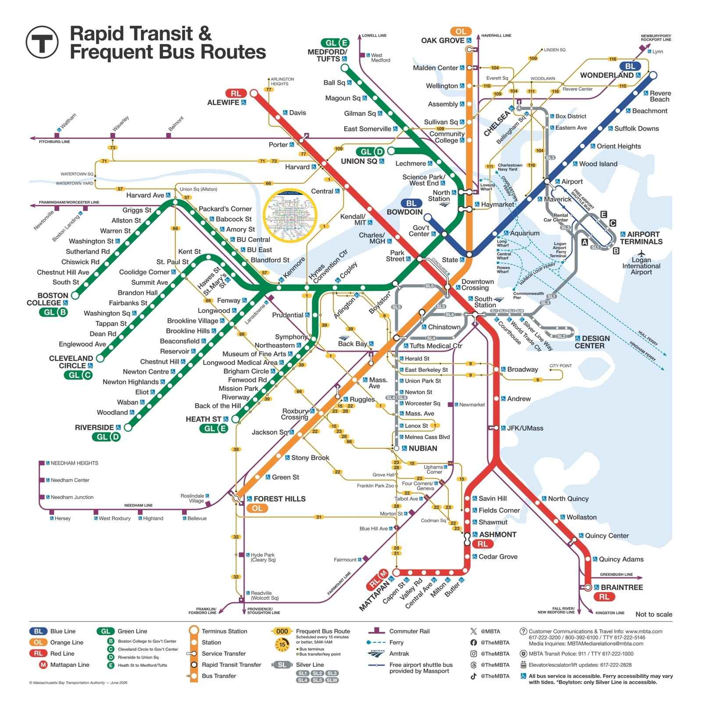
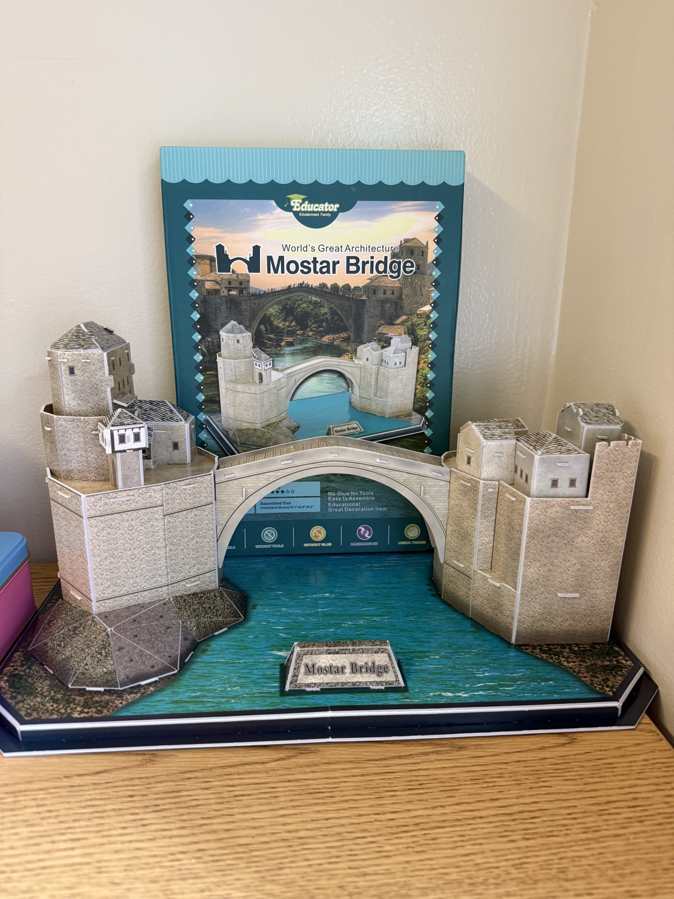

Creative Works
A few things I like to build and explore outside of research: transit systems, and paper models.


A few things I like to build and explore outside of research: transit systems, and paper models.

